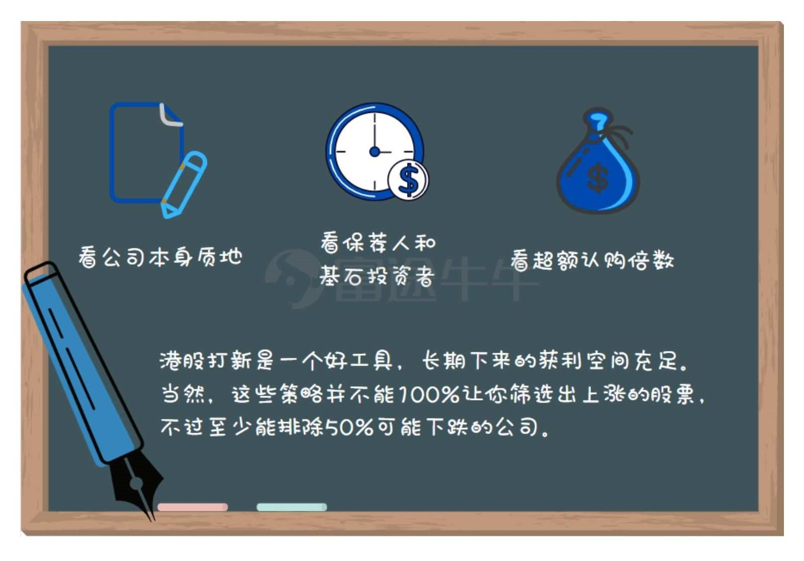

6.1.7.1. 打新秘籍 | 每年百余IPO，一眼锁定翻倍的那只！
2019年港股 IPO 的市场概况
我们基本上可以确定，不管选股标准为何，就算你每一个新股都打，港股打新的长期收
益率也是正的。
那么，还有什么方式可以进一步优化港股打新的收益率？
答案是：
在选股时期，利用香港上市公司的公开招股书以及保荐人、绿鞋机制等更进一步去挑选出那些上涨概率大的股票，同时剔除那些资质不好，想圈钱就走的烂股。在认购截至后，通过超额认购倍数来判断是否进行暗盘入场。
在市场分化的情况下，闭眼每只新股都打一手的策略已经不太灵了。所以我们需要更聪明的选股策略。
也就是，一眼锁定为数不多的潜力股，出手快准狠。
当然如何选新股是个动态博弈的过程，有很多不确定因素，是个概率问题。牛友们能做的，就是通过研究和观察，努力提高赚钱的概率。
影响一个新股开盘走势的有很多因素，牛牛通过一张图来总结了几个对新股来说影响最
大的因素：

6.1.7.1.1. 01 公司质地
6.1.7.1.1.1. 市值
基本上市值小于5亿元的新股破发概率大；大于20亿港币的新股破发概率低。
小于5亿元，这类股票为小盘股，这种股票因为价格低、市值小容易被掌握资金者（如庄家）操控上市的价格涨幅，若求稳健打新，就应该避免申购这类新股。
大于20亿港币，这类股票为大盘股，通常营业额高、体量越大的公司在上市时市值越高，这类公司通常已有稳健的营收以及成长率，市场基金乐于抬升。
6.1.7.1.1.2. 行业前景
行业前景我们可以通过公司招股书来判断发展情况、未来前景等，另一个是看公司是什
么行业。
例如，港股打新目前最受欢迎的行业是医药和物业股，例如今年以来，科技医疗领域的康方生物和沛嘉医疗都在 IPO 频传佳讯，暗盘成交额更是以1.61亿和1.14亿港元分列历史第一和第四。今日，物业股建业新生活也以首日高开22.92％成为热门新股。
通过对行业前景的预测和同类型新股的过往表现，牛友们也可以判断即将上市的公司的市场预期，提高大众牛股的概率。
6.1.7.1.2. 02 保荐人与基石投资者
6.1.7.1.2.1. 保荐人
保荐人是指企业上市的推荐人，主要做保荐工作和上市辅导工作，向证监会申报等，赚取发行人的发行费用。
港股的新股发行跟A股是完全不同的体系，更加成熟和市场化，非常考验保荐人的功力。
同时由于充分市场化竞争产生的差异化，导致了每个券商都有自己独特的深耕领域。
小市值新股，丰盛融资和汇富融资相对不错。中大型新股，建银国际和摩根士丹利不错。中金和中信里昂，则是出了名的护盘不积极思想有问题。
6.1.7.1.2.2. 基石投资者
基石投资者主要指一流的机构投资者、大型企业集团、以及知名富豪或其所属企业，可以给标的上市起背书的作用。
基石投资者在国际配售中一般会认购较大份额的新股，并且需要承诺上市后锁定6到12个月，同时在招股书中公开披露。能当基石投资者基本都是声名远播的大机构，所以如果基石投资者一看就阵容豪华，那是可以给股票加分的「意见领袖」
6.1.7.1.3. 03 超额认购倍数
超额认购倍数很好理解，指的是新股发行时，买新股的金额和要发行金额的比值。简单理解就是，有10个牛友都来拜师牛牛，但牛牛最后只能忍痛收一名徒弟，这样牛友对牛牛的超额认购倍数就是十倍~
超额认购倍数一般可以反映市场对公司的认可程度及资金追逐程度。怎么看这个数据？以刚结束认购的沛嘉医疗一B为例，在富途 app 上点开可以看到：
这个公司只需要募集2.34亿的资金，结果全市场融资认购额是995.63亿，超额倍数是425倍，我们可以感受一下大家对于好公司的追捧有多狂热，预示着有很大的可能在暗盘以及正式上市后上涨。
如果判断新股能不能打，只看一个指标，那么看这个就够了。因为这个指标是市场上的投资者综合了所有信息，最后得出来的一个结果
牛牛通过统计2019年港股 IPO 的认购倍数与它们的首日表现，也得出了这样的结论：
如果认购倍数越高，代表市场资金对该新股的兴趣越高，首日上涨的概率也高。
认购倍数与首日表现
最后，对于港股选股还是要纵隔多方面的因素去综合判断，除了上面牛牛提到的方面，牛友们还可以关注同类行业新股的过往表现，中签率，上市前的新闻消息以及大盘行情等等、经过牛友们聪明地判断，大家一定都可以选到心仪的牛股！